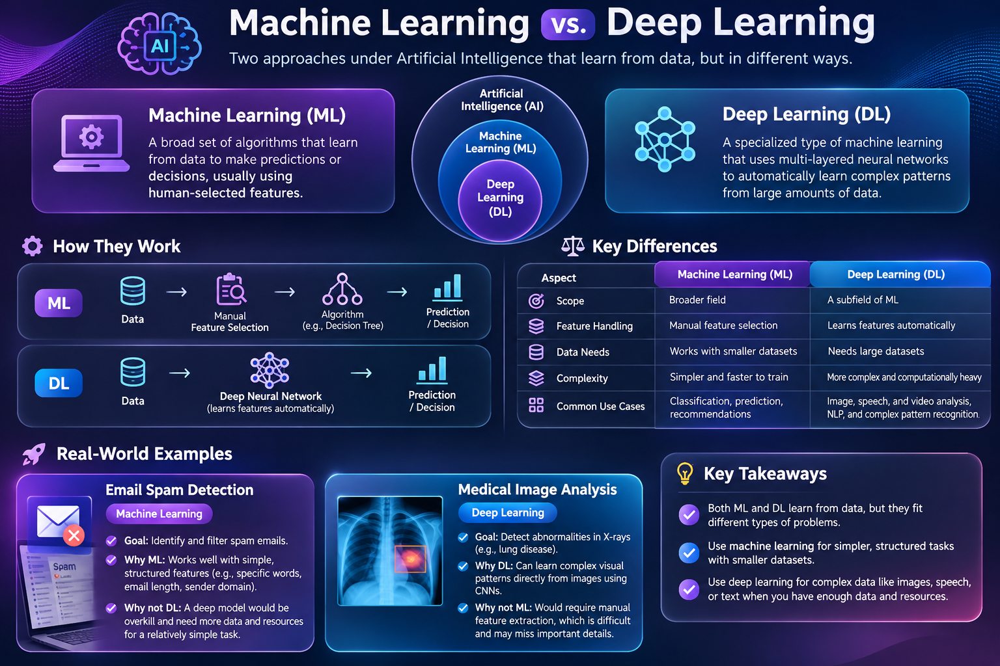

Quest Master
Uses a playful tone and suggests offline activities based on the information the user supplies, such as available time and energy level.
Activity ideas Creative playA team-built chatbot, a comparison of learning models, a course presentation on AI and leading change, and three data challenge scenarios.
4 artifacts · 11 slides, 9 diagrams · 3 data scenarios
Two chatbot modes for children and parents, with a documented offline-game test.
Read the case study
Compare the data, features, and model tradeoffs across two applications.
Read the comparisonEleven slides on neural networks, AI ethics, communication, and leading change.
Explore the slidesExplore data quality, bias in hiring models, and privacy in collaborative learning.
Explore the scenariosA two-mode chatbot prototype that suggests offline activities for children and helps parents prepare screen-time conversations.
Portfolio updated
The Poe link is optional. The documented test is summarized below, without an account.
Reconstructed from the team’s written lab submission. This is a visual summary, not a screenshot or live chatbot.
“2 hours, medium energy”
Generated three offline quests.
The conversation developed “Jimmie Bimmie”, including game rules and a two-minute time-out feature.
Separate user intents need separate conversational requirements. The child-mode test gave our team a concrete interaction to examine; parent-mode behavior still needs testing.
Uses a playful tone and suggests offline activities based on the information the user supplies, such as available time and energy level.
Activity ideas Creative playUses a calm tone and provides draft conversation scripts and media agreements for a parent to review and adapt.
Conversation support Human judgmentConsidered the frustration children and parents may experience when screen-time boundaries become a source of conflict.
Framed the need around engaging offline alternatives and supportive communication, rather than screen-time limits alone.
Combined a child-facing activity guide with a parent-facing conversation coach in one two-mode assistant.
Used a detailed Poe system prompt to define the personas, tone, and conditional instructions for each role.
Simulated a child interaction and followed one suggested quest through to a collaboratively developed game.
“2 hours, medium energy”
This example is summarized from the team’s lab submission. It was a simulated interaction, not a study involving children or a validation of the parent mode.
A comparison of email spam detection and medical image analysis, written for recruiters, engineering managers, and technical professionals.
Portfolio updated
Start with a baseline. Choose complexity when the task justifies it.
Deep learning is a subset of machine learning. Here, “traditional ML” means approaches such as Naive Bayes and logistic regression.Classify a message as spam or legitimate. A traditional ML baseline can turn email text into numerical features and learn from labeled messages.
Explore how a convolutional neural network could learn visual features from labeled images for a defined classification task.
These are typical considerations, not fixed rules. Actual requirements depend on the dataset, model, and deployment.
| Decision factor | Traditional ML baseline | Deep learning approach |
|---|---|---|
| Feature representation | Explicit features such as word counts or TF-IDF. | Neural network layers learn feature representations. |
| Data | Can be a useful baseline when labeled data is limited. | Training from scratch can need substantial data; transfer learning can reduce that need. |
| Compute | Many text baselines train on a CPU. | Larger networks can benefit from GPU acceleration. |
| Understanding errors | Linear feature weights can help explain predictions. | Learned representations can be harder to interpret. |
| Example fit | Spam classification using numerical text features. | Image classification using a CNN. |
| Selection rule | Compare results, latency, data quality, maintenance, and the consequences of errors before choosing. | |
An 11-slide presentation connecting neural-network foundations, learning with AI, ethical questions, and the communication needed to lead change.
Use Previous, Next, or the slide buttons. With the presentation focused, use the arrow keys, Space, Home, or End.
Neural networks · Learning with AI · Leading change · Showing the work
Three ALML-500 exercises on preparing data, evaluating models in new settings, and protecting sensitive records.
Compare star-derived labels with blind annotations and keep near-duplicates together when splitting the data.
Read the data quality scenario →Test whether the model predicts job outcomes and assess subgroup performance before expanding to a new country.
Read the responsible scaling scenario →Keep raw records at each hospital, define the privacy guarantees of shared updates, and evaluate results per site.
Read the privacy scenario →I compiled these notes for my October 2026 coursework. The three announcements took place between November 2022 and March 2024.
Technical research Visual communication Continuing educationOpenAI introduced a conversational system that could respond to follow-up questions. Its launch provided a public way to explore the strengths and limitations of conversational AI.
Developer perspective: A conversational interface creates opportunities for assistance inside applications, while making accuracy and user expectations important design concerns.
Read OpenAI’s announcement ↗Google introduced Gemini, with developer access to Gemini Pro through Google AI Studio and Vertex AI beginning December 13.
Developer perspective: Managed APIs offer a path for integrating model capabilities into software without training a foundation model from scratch.
Read Google’s developer announcement ↗Anthropic announced Claude 3 Haiku, Sonnet, and Opus, presenting different options within one model family.
Developer perspective: Choosing a model involves tradeoffs among capability, response time, and cost. Application requirements should guide that choice.
Read Anthropic’s announcement ↗These notes are intended for software developers. The milestones establish context; the developer perspectives explain why they are relevant to someone building software.
It demonstrates research and technical communication. It does not represent a deployed AI application or model training project.
My background is in enterprise web development. Studying AI gives me another area in which to apply research, evaluation, and clear communication.
The next step in my learning is to connect this understanding with practical projects that include working code, testing, and documented limitations.
ChatGPT assisted with the portfolio structure, website code, and wording of this artifact. Milestone summaries link to the original company announcements. Developer perspectives are interpretations, rather than claims made by those sources.
Coverage ends March 4, 2024. The page is retained as a dated learning artifact, separate from the engineering case studies.